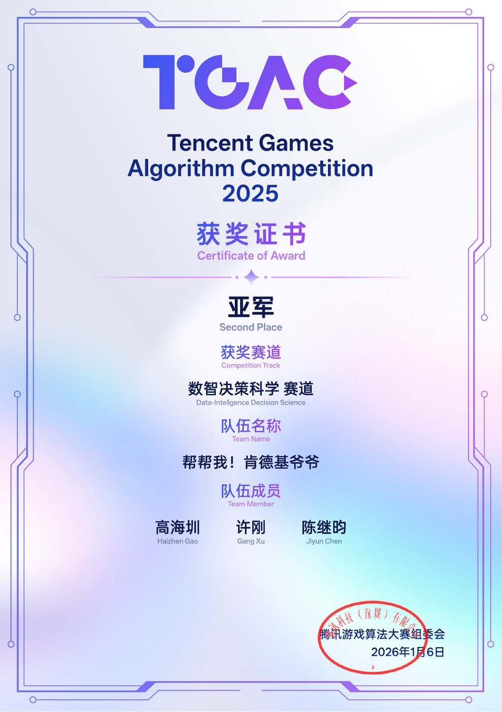
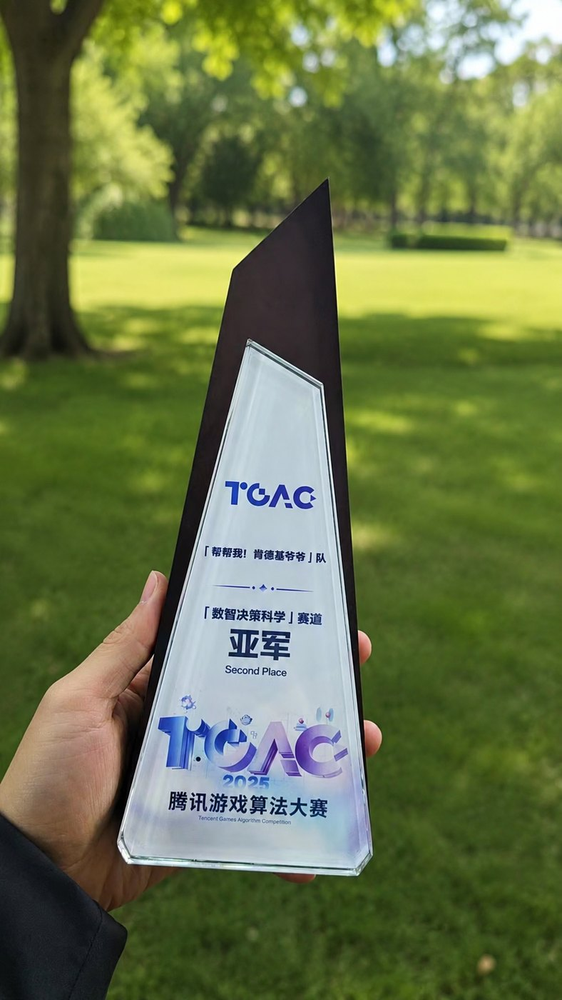
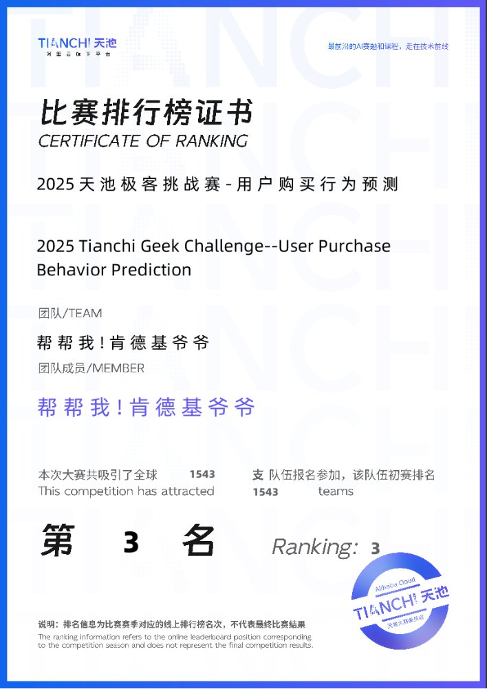
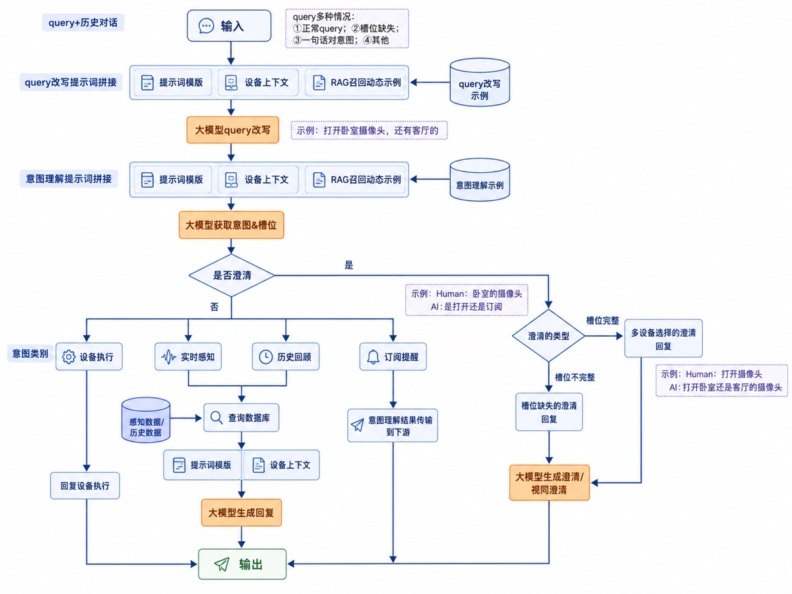
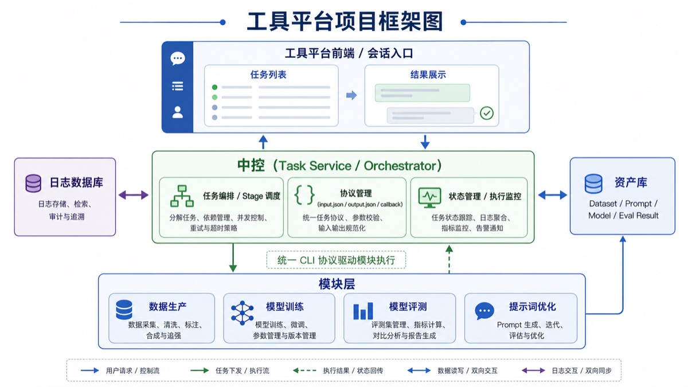
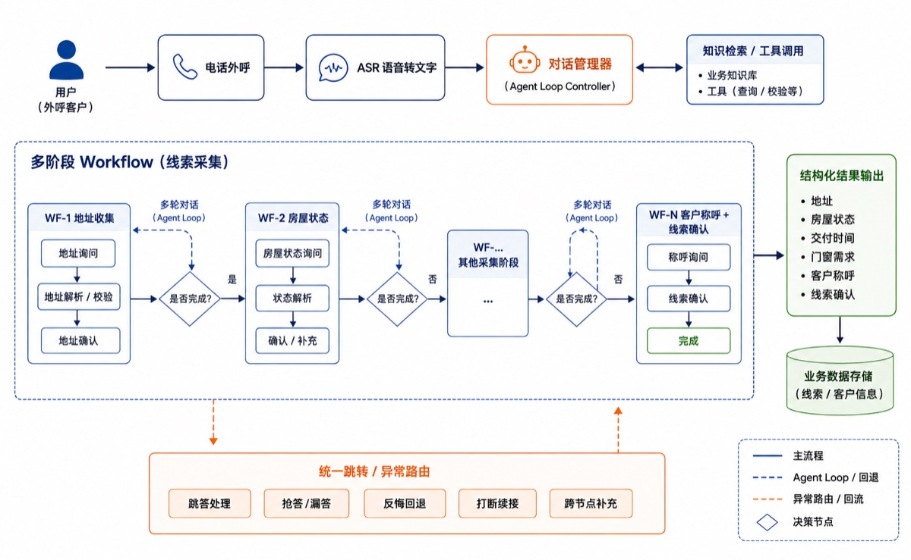
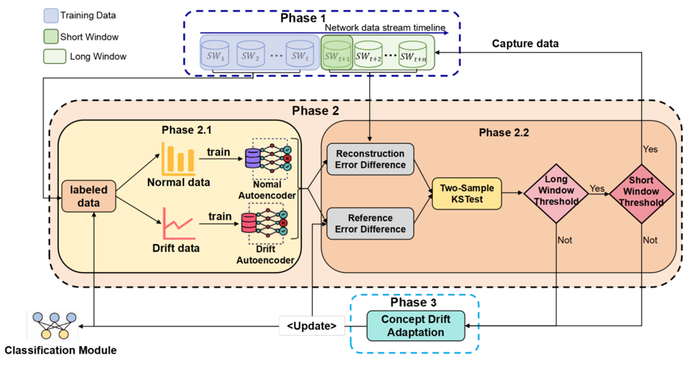
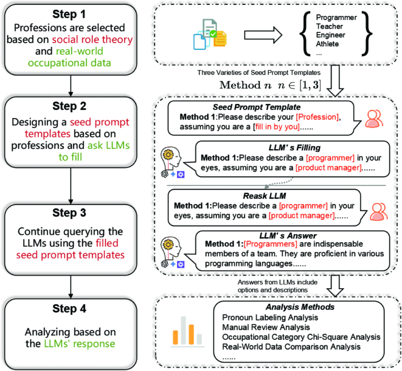

教育经历
广州大学，大数据技术与工程硕士，2024.09 - 2027.06，GPA 3.96/5.00，前 10%。实验室：粤语语料库建设与大模型评测重点实验室。
广东技术师范大学，网络空间安全本科，2020.09 - 2024.06，GPA 3.69/5.00，前 10%。
个人主页
广州大学网络空间安全学院大数据技术与工程硕士研究生
关注 Agent 系统、大模型安全、数据治理、Text2SQL 与端侧大模型应用。
hsunshinez@163.com / GitHub / 广州，中国 / 导师：齐佳音
我是广州大学大数据技术与工程硕士研究生，导师为齐佳音老师，所在团队为方滨兴院士团队。
我更关注可评测、可部署、可持续迭代的大模型系统，近期工作围绕 Agent 驱动的研发工具平台、端侧指令理解、语音客服 Agent、数据生产与 SQL 执行反馈展开。
广州大学，大数据技术与工程硕士，2024.09 - 2027.06，GPA 3.96/5.00，前 10%。实验室：粤语语料库建设与大模型评测重点实验室。
广东技术师范大学，网络空间安全本科，2020.09 - 2024.06，GPA 3.69/5.00，前 10%。


腾讯游戏算法大赛面向真实业务决策与智能分析场景。我们围绕 AI 数据资产构建、Schema Linking 与 SQL 生成 Agent 搭建方案，并基于 StarRocks 执行环境完成 SQL 运行验证、结果比对与细粒度评测。

赛题基于用户、商品和行为日志预测后续购买行为。方案重点放在时间窗口特征、用户、商品、类目统计、时序切分验证和模型融合上。
参与智能安防摄像头端侧大模型项目，基于 Qwen3-VL-2B 构建指令理解能力，并适配 RK3576 + RK1820 异构平台及 W4A16 量化推理。

面向大模型研发工具相互独立、资产分散且依赖人工串联的问题，建设同时服务开发者与 Agent 的统一工具平台，通过 CLI、Skill 和任务编排机制打通各环节，使 Agent 可按业务目标自动编排任务并循环优化直至达标。

面向欧派智能家居的外呼线索收集业务，通过多轮对话收集地址、房屋状态、交付时间、门窗需求及客户称呼等信息，支持跳答、抢答、反悔、打断和跨节点补充，实现异常对话下的流程恢复与续接。

基于 FastAPI 与 LangGraph 的训练数据清洗工作台：把格式转化、确定性格式检查、内容审查与修复候选生成串成可在浏览器中操作的完整流程，同时保留 CLI 与可测试的 Python 模块。
BOSS 直聘网页端的筛选 + 一键海投浏览器扩展：先按规则过滤岗位，再自动批量沟通，不用逐个手动点。已上架 Chrome 应用商店与 Microsoft Edge 加载项商店。

这篇论文针对时间序列网络入侵检测中的概念漂移问题，提出 DyNA-IDS 框架，用短窗口和长窗口漂移检测触发模型自适应更新，提升动态流量场景下的稳定性。
论文链接
这篇工作把性别偏见视作可被系统化利用的安全脆弱点，构建可扩展红队流程，通过职业种子提示、模型补全与再询问来发现基础模型中的性别相关风险。
论文链接熟悉常见 Agent 设计模式与可观测的多智能体系统。
熟悉 SFT、LoRA 与强化后训练，以及量化端侧推理。
掌握 Codex、Hermes、Claude Code 等 Coding Agent 与 AI 编程技巧和方法论。